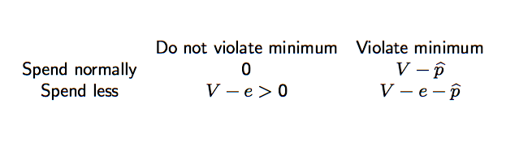

2000 miles
Mean 2425.083333
70 miles
Mean 1068.25
Looking for unified framework of behavioral findings
Why some things are easy and others difficult
Artificial intelligence
Theories that incorporate constraints on the information-processing capabilities of the actor may be called theories of bounded rationality. (Simon, 1972, p. 162)”
Two dimensions
Expansion of rationality models, or extended Savage paradigm.The decision maker optimises given the resource constrains
True bounded rationality, exemplified by failure of logical omniscience, where decision maker does not know the implications of what he knows
If one wanted to be unfair to economists in general, he might select, for purposes of comparison with these psychological principles, a certain well known though fictitious character whose idiosyncrasies furnish alternate joy and irritation to modern readers of economics.
He is a somewhat inhuman individual who, inconsistently enough, carries the critical weighing of hedonistic values to the point of mania.
So completely is he absorbed in his irrationally rational passion for impassionate calculation that he often remains a day laborer at pitifully low wages from sheer devotion to the fine art of making the most out of his scanty income and getting the highest returns from his employers for such mediocre skill as he chooses to devote to their service. Yet he cannot fail to be aware that the actuarial talent he lavishes outside of working hours would suffice to earn him a relatively princely salary in the office of any insurance company.
So intricate are the calculations he delights in that even trained economists occasionally blunder into errors in recording them.
(J. M. Clark, 1918, Economics and modern psycology)
** Don’t get all the fine nuances of the psychology, but those models are tractable
** Rubinstein direction. Suppose we play Nash, given your reaction function, my strategy optimizes on both outcome and computing cost. Rubinstein proves some existence theorems. But it is very difficult to apply his approach.
** Those models are descriptively rich, but they are unsystematic, and often hard to use.
Human computer comparison
Human mind 10^15 operations per second
Computer 10^13 operations per second
Moore’s law: every 1.5 years computer power doubles
Thus, every 15 years computer power goes up 10^3
If we believe this, then in 45 years computers can be 10^6 more powerful than humans
Of course, we’ll need to understand how humans think
Bounded Rationality as noise. Consumer sees a noisy signal q ̃ = q + σε of quantity/quality q.
Bounded Rationality as imperfect monitoring of the state of the world. People don’t think about the variables all the time. They look up variable k at times t1, ..., tn
Bounded Rationality as adjustment cost. Make the decision only if the cost less than the incremental utility.
decision noise is good for firms’ profits
Evidence: car dealers sell cars for higher prices to women and minorities than to white men. Reason: difference in expertise. There is lots of other evidence of how firms take advantage of consumers. See paper by Susan Woodward on mortgage refinancing markets: unsophisticated people are charged much more than sophisticated people.
and competition almost does not decrease markup (beyond markup when there are already some 20 firms).
Mutual funds market
— Around 10,000 funds. Fidelity alone has 600 funds.
— Lots of fairly high fees. Entry fee 12%, every year management fee of 12% and if you quit exit fee of 12%. On the top of that the manager pays various fees to various brokers, that is passed on to consumers.
— The puzzle — how all those markups are possible with so many funds?
— Part of the reason for that many funds is that Fidelity and others have incubator funds. With large probability some of them will beat the market ten years in a row, and then they can propose them to unsophisticated consumers.
Is it true that if competition increases then price goes always down? — Not always, given noise
Could the fees be due to search costs?
— Suppose you have x = $200,000 and you keep it for 10 years.
— You pay 1.5%/year and thus lose 200,000 × 1.5% = 3,000 a year.
Competing explanation — people don’t know that two index mutual fund are the same thing.
What are the regulatory implications of consumer confusion?
Where does confusion σεi comes from? For instance, provide a cognitive model that gives a microfoundation for this “noise”
Find a model that predicts the level of the confusion σ? e.g., in the mutual fund market, give a model that predicts the reasonable order of magnitude.
Find a model that predicts how σ varies with experience?
How do firms increase/create confusion σ?
Empirically, how could we distinguish whether profits come from true prod uct differentiation, search costs, or confusion noise?
Firms have an incentive to increase the confusion. The effect is stronger, the stronger is competition.
Example — cell phone pricing.
Symmetry of firms is important here.
If there is a firm that is much better than others, then it wants to have very low σ to signal this.
When competition grows, the problem gets exarcerbated.
— The fund manager wants to sell their own funds
— Advisor charges you 1% per year for advice: he gives you stories each month that suggest some kind of trade. Otherwise, he could lose client.
Why high prices of addons and low prices of printers or cars?
Often the high addons fees are paid by the poor not rich,
Who might be argued have low marginal value of money, e.g. use of credit card to facilitate transactions
Many goods have “shrouded attributes” that some people don’t anticipate when deciding on a purchase
Consider buying a printer
— Some consumers only look at printer prices.
— They don’t look up the cost of cartridges.
Neglected addons will have large markups.
— Even in competitive markets.
— Even when demand is price elastic.
— Even when advertising is free.
Consider a bank that sells two kinds of services.
For price p a consumer can open an account.
If consumer violates minimum she pays fee pstar.
Assume that the true cost to the bank is zero.
Consumer benefits V from violating the minimum.
Consumer alternatively may reduce expenditure to generate liquidity V
Sophisticated consumer qqqq
Sophisticates anticipate the fee pstar.
They choose to spend less, with payoff V − e
or to violate the minimum, with payoff V − pstar
Naive consumers do not fully anticipate the fee pstar.
Naive consumers may completely overlook the aftermarket
or they may mistakenly believe that pstar < e.
Naive consumers will not spend at a reduced rate
Naive consumer must choose between foregoing payoff V or paying fee pstar
Sophisticates will buy the addon iff V − pstar ≥ V − e
Naives will buy the addon iff V − pstar ≥ 0.
Firms set high markups in the addon market
If there aren’t many sophisticates, the addon markups will be inefficiently high: pstar = V > e.
High markups for the addon are offset by low or negative markups on the base good.
To see this, assume market is competitive, so μ ≃ 0
— Loss leader base good: pstar ≈ − (1 − α)V < 0.
Examples: printers, hotels, banks, credit card teaser, mortgage teaser, cell phone, etc...
The neglected market becomes the profitcenter because at least some consumers don’t anticipate the shrouded addon market and won’t respond to a price cut in the shrouded market
bounded rationality, people don’t see small print
overconfidence — people believe they will not fail prey to small print penalties
| Space | Forward |
|---|---|
| Right, Down, Page Down | Next slide |
| Left, Up, Page Up | Previous slide |
| P | Open presenter console |
| H | Toggle this help |